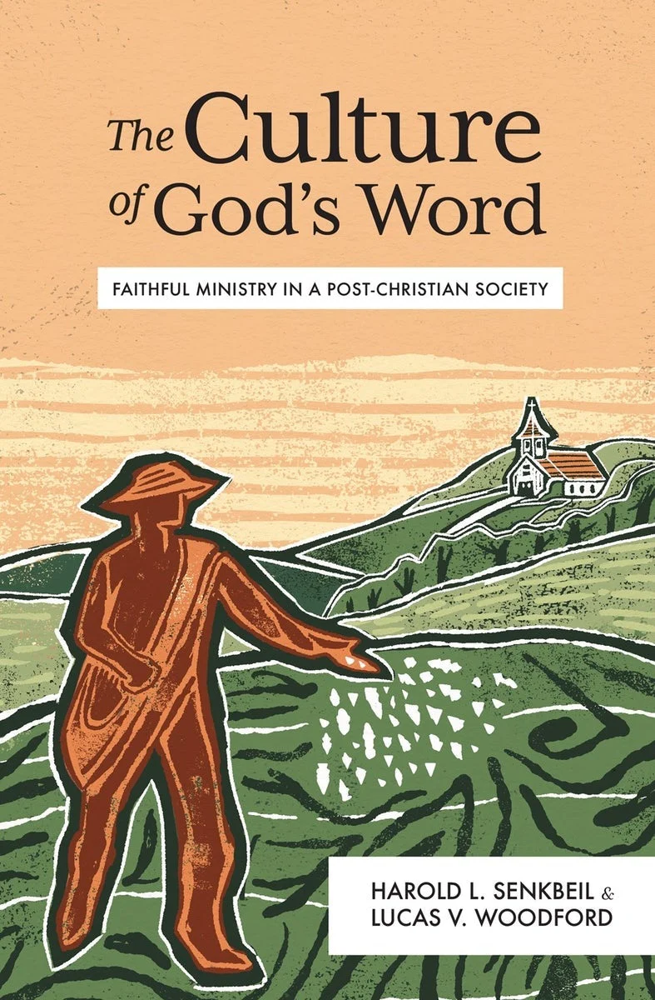

The Culture of God's Word
Lexham Press · Evangelism & Ministry · Paperback
Published February 2026 · ISBN 9781683598930 · $19.99
From the publisher
Some fight to recover Christian culture; others abandon any hope of transforming culture. Both mindsets are at odds with the early church. The apostles weren't seeking to convert cultures but people, because God's word cultivates its own culture — the culture of the word. When the word is sown, the culture is grown. Our mission remains the same today: a stubborn commitment to proclaim God's word.
In The Culture of God's Word, Harold L. Senkbeil and Lucas V. Woodford reclaim the biblical approach to transformation and social witness. By returning to the apostles' own example in the book of Acts, they remind us of the power of the gospel — God's word embraces broken hearts and broken lives and transforms them in Christ Jesus. The church is born of God's word and grows by God's word.
Description adapted from the publisher, Lexham Press.
Pulpit & Page note: we'll add our own take once we've read it. For now, this page gathers the publisher's description.
← Back to the calendar Get the weekly email
Disclosure: Pulpit & Page may earn a commission from purchases made through our links, at no extra cost to you.